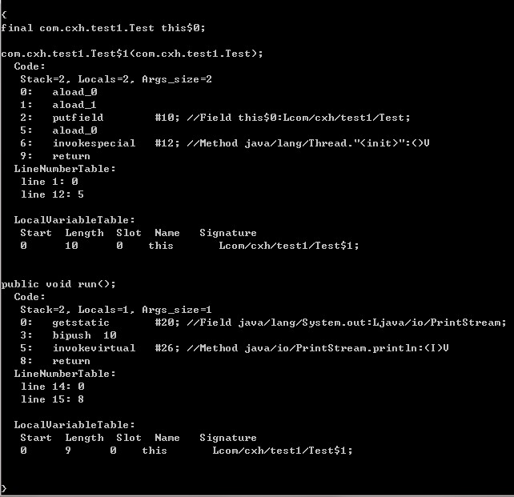
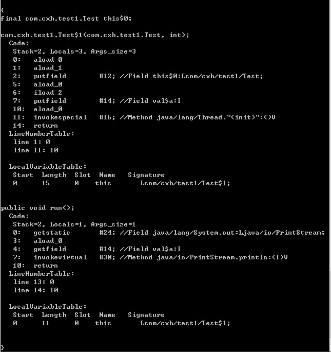

I. Inner Class Basics
In Java, you can define a class inside another class or inside a method. Such a class is called an inner class. In a broad sense, inner classes generally include the following four types: member inner classes, local inner classes, anonymous inner classes, and static inner classes. Let's first understand the usage of these four types of inner classes.
1. Member Inner Class
A member inner class is the most common kind of inner class. It is defined inside another class, as shown below:
class Circle {
double radius = 0;
public Circle(double radius) {
this.radius = radius;
}
class Draw { //内部类
public void drawSahpe() {
System.out.println("drawshape");
}
}
}
In this way, the class Draw seems to be a member of the class Circle, and Circle is called the outer class. A member inner class can unconditionally access all member properties and member methods of the outer class, including private members and static members.
class Circle {
private double radius = 0;
public static int count =1;
public Circle(double radius) {
this.radius = radius;
}
class Draw { //内部类
public void drawSahpe() {
System.out.println(radius); //外部类的private成员
System.out.println(count); //外部类的静态成员
}
}
}
However, note that when a member inner class has a member variable or method with the same name as the outer class, hiding occurs. That is, by default, the member of the member inner class is accessed. To access the same-named member of the outer class, you need to access it in the following form:
外部类.this.成员变量 外部类.this.成员方法
Although a member inner class can unconditionally access the members of the outer class, the outer class cannot access the members of a member inner class so freely. In the outer class, to access members of a member inner class, you must first create an object of the member inner class, and then access it through a reference pointing to that object:
class Circle {
private double radius = 0;
public Circle(double radius) {
this.radius = radius;
getDrawInstance().drawSahpe(); //必须先创建成员内部类的对象，再进行访问
}
private Draw getDrawInstance() {
return new Draw();
}
class Draw { //内部类
public void drawSahpe() {
System.out.println(radius); //外部类的private成员
}
}
}A member inner class exists attached to the outer class. That is, to create an object of a member inner class, an outer class object must first exist. The general way to create a member inner class object is as follows:
public class Test {
public static void main(String[] args) {
//第一种方式：
Outter outter = new Outter();
Outter.Inner inner = outter.new Inner(); //必须通过Outter对象来创建
//第二种方式：
Outter.Inner inner1 = outter.getInnerInstance();
}
}
class Outter {
private Inner inner = null;
public Outter() {
}
public Inner getInnerInstance() {
if(inner == null)
inner = new Inner();
return inner;
}
class Inner {
public Inner() {
}
}
}
Inner classes can have private, protected, public, and package access. For example, in the above example, if the member inner class Inner is modified with private, it can only be accessed inside the outer class; if modified with public, it can be accessed anywhere; if modified with protected, it can only be accessed within the same package or by classes that inherit the outer class; if it has default access, it can only be accessed within the same package. This is a little different from an outer class, which can only be modified with public and package access. Personally, I understand it this way: since a member inner class looks like a member of the outer class, it can have multiple access modifiers just like class members.
2. Local Inner Class
A local inner class is a class defined within a method or a scope. The difference between it and a member inner class is that access to a local inner class is limited to that method or scope.
class People{
public People() {
}
}
class Man{
public Man(){
}
public People getWoman(){
class Woman extends People{ //局部内部类
int age =0;
}
return new Woman();
}
} Note: A local inner class is like a local variable inside a method; it cannot have public, protected, private, or static modifiers.
3. Anonymous Inner Class
Anonymous inner classes are probably the most used when we write code in our daily work. When writing event listener code, using anonymous inner classes is not only convenient but also makes the code easier to maintain. The following code is an Android event listener code:
scan_bt.setOnClickListener(new OnClickListener() {
@Override
public void onClick(View v) {
// TODO Auto-generated method stub
}
});
history_bt.setOnClickListener(new OnClickListener() {
@Override
public void onClick(View v) {
// TODO Auto-generated method stub
}
});This code sets listeners for two buttons, and anonymous inner classes are used here. In this code:
new OnClickListener() {
@Override
public void onClick(View v) {
// TODO Auto-generated method stub
}
}This is the use of an anonymous inner class. In the code, a listener object needs to be set for the button. Using an anonymous inner class can create a corresponding object while implementing the methods of the parent class or interface, but the prerequisite is that the parent class or interface must already exist. Of course, the following way is also acceptable and achieves the same effect as using the anonymous inner class above.
private void setListener()
{
scan_bt.setOnClickListener(new Listener1());
history_bt.setOnClickListener(new Listener2());
}
class Listener1 implements View.OnClickListener{
@Override
public void onClick(View v) {
// TODO Auto-generated method stub
}
}
class Listener2 implements View.OnClickListener{
@Override
public void onClick(View v) {
// TODO Auto-generated method stub
}
}
Although this way can achieve the same effect, it is both verbose and difficult to maintain, so generally anonymous inner classes are used to write event listener code. Similarly, anonymous inner classes cannot have access modifiers or the static modifier.
An anonymous inner class is the only kind of class that does not have a constructor. Because it has no constructor, the scope of use of anonymous inner classes is very limited. Most anonymous inner classes are used for interface callbacks. At compile time, the system automatically names an anonymous inner class as Outter$1.class. Generally speaking, anonymous inner classes are used to inherit other classes or implement interfaces, without needing to add extra methods; they only implement or override inherited methods.
4. Static Inner Class
A static inner class is also a class defined inside another class, except that the keyword static is added before the class. A static inner class does not need to depend on the outer class, which is somewhat similar to static member properties of a class, and it cannot use the outer class's non-static member variables or methods. This is easy to understand: because a static inner class object can be created without an outer class object, if it were allowed to access the outer class's non-static members, a contradiction would arise, since the outer class's non-static members must depend on a specific object.
public class Test {
public static void main(String[] args) {
Outter.Inner inner = new Outter.Inner();
}
}
class Outter {
public Outter() {
}
static class Inner {
public Inner() {
}
}
}

II. In-Depth Understanding of Inner Classes
1. Why can a member inner class unconditionally access the members of the outer class?
Before this, we have already discussed that a member inner class can unconditionally access the members of the outer class. So how exactly is it implemented? Let's decompile the bytecode file to find out. In fact, when the compiler compiles, it compiles the member inner class into a separate bytecode file. Below is the code of Outter.java:
public class Outter {
private Inner inner = null;
public Outter() {
}
public Inner getInnerInstance() {
if(inner == null)
inner = new Inner();
return inner;
}
protected class Inner {
public Inner() {
}
}
}After compilation, two bytecode files appear:
Decompiling the Outter$Inner.class file gives the following information:
E:\Workspace\Test\bin\com\cxh\test2>javap -v Outter$Inner
Compiled from "Outter.java"
public class com.cxh.test2.Outter$Inner extends java.lang.Object
SourceFile: "Outter.java"
InnerClass:
#24= #1 of #22; //Inner=class com/cxh/test2/Outter$Inner of class com/cxh/tes
t2/Outter
minor version: 0
major version: 50
Constant pool:
const #1 = class #2; // com/cxh/test2/Outter$Inner
const #2 = Asciz com/cxh/test2/Outter$Inner;
const #3 = class #4; // java/lang/Object
const #4 = Asciz java/lang/Object;
const #5 = Asciz this$0;
const #6 = Asciz Lcom/cxh/test2/Outter;;
const #7 = Asciz <init>;
const #8 = Asciz (Lcom/cxh/test2/Outter;)V;
const #9 = Asciz Code;
const #10 = Field #1.#11; // com/cxh/test2/Outter$Inner.this$0:Lcom/cxh/t
est2/Outter;
const #11 = NameAndType #5:#6;// this$0:Lcom/cxh/test2/Outter;
const #12 = Method #3.#13; // java/lang/Object."<init>":()V
const #13 = NameAndType #7:#14;// "<init>":()V
const #14 = Asciz ()V;
const #15 = Asciz LineNumberTable;
const #16 = Asciz LocalVariableTable;
const #17 = Asciz this;
const #18 = Asciz Lcom/cxh/test2/Outter$Inner;;
const #19 = Asciz SourceFile;
const #20 = Asciz Outter.java;
const #21 = Asciz InnerClasses;
const #22 = class #23; // com/cxh/test2/Outter
const #23 = Asciz com/cxh/test2/Outter;
const #24 = Asciz Inner;
{
final com.cxh.test2.Outter this$0;
public com.cxh.test2.Outter$Inner(com.cxh.test2.Outter);
Code:
Stack=2, Locals=2, Args_size=2
0: aload_0
1: aload_1
2: putfield #10; //Field this$0:Lcom/cxh/test2/Outter;
5: aload_0
6: invokespecial #12; //Method java/lang/Object."<init>":()V
9: return
LineNumberTable:
line 16: 0
line 18: 9
LocalVariableTable:
Start Length Slot Name Signature
0 10 0 this Lcom/cxh/test2/Outter$Inner;
}Lines 11 through 35 are the constant pool contents. Let's explain the content at line 38 item by item:
final com.cxh.test2.Outter this$0;
This line is a pointer to the outer class object. Seeing this, everyone must suddenly understand. That is, the compiler by default adds a reference pointing to the outer class object for the member inner class. Then how is this reference initialized? Next, let's look at the constructor of the inner class:
public com.cxh.test2.Outter$Inner(com.cxh.test2.Outter);
From this, it can be seen that although the constructor of the inner class we defined is a no-argument constructor, the compiler still adds a parameter by default, whose type is a reference to the outer class object. Therefore, the Outter this&0 pointer in the member inner class points to the outer class object, allowing the members of the outer class to be freely accessed in the member inner class. This also indirectly shows that a member inner class depends on the outer class. If an outer class object is not created, the Outter this&0 reference cannot be initialized and assigned, so a member inner class object cannot be created.
2. Why can local inner classes and anonymous inner classes only access local final variables?
This question has probably troubled many people. Before discussing it, let's look at the following code:
public class Test {
public static void main(String[] args) {
}
public void test(final int b) {
final int a = 10;
new Thread(){
public void run() {
System.out.println(a);
System.out.println(b);
};
}.start();
}
} This code will be compiled into two class files: Test.class and Test1.class.By default, the compiler names anonymous inner classes and local inner classes asOutterx.class(x is a positive integer)。
According to the figure above, the anonymous inner class in the test method is named Test$1.
In the above code, if the final before either variable a or b is removed, this code will not compile. First, let's consider such a problem:
When the test method finishes executing, the lifecycle of variable a ends. At this time, the lifecycle of the Thread object may not yet be over. So continuing to access variable a in the run method of Thread becomes impossible. But this effect still needs to be achieved. What can be done? Java uses a copying approach to solve this problem. Decompiling the bytecode of this code yields the following:

We can see that in the run method there is an instruction:
bipush 10
This instruction pushes the operand 10 onto the stack, indicating that a local local variable is used. This process is done by the compiler by default during compilation. If the value of the variable can be determined at compile time, the compiler by default adds a literal with equal content to the constant pool of the anonymous inner class (local inner class), or directly embeds the corresponding bytecode into the executed bytecode. In this way, the variable used by the anonymous inner class is another local variable, only its value is equal to that of the local variable in the method, so it is completely independent from the local variable in the method.
Now look at another example:
public class Test {
public static void main(String[] args) {
}
public void test(final int a) {
new Thread(){
public void run() {
System.out.println(a);
};
}.start();
}
}Decompiling yields:

We can see that the constructor of the anonymous inner class Test$1 has two parameters: one is a reference to the outer class object, and the other is an int variable. Obviously, the parameter a in the test method is passed in as an argument to initialize the copy of variable a in the anonymous inner class.
That is to say, if the value of the local variable can be determined at compile time, a copy is created directly in the anonymous inner class. If the value of the local variable cannot be determined at compile time, the copy is initialized by passing parameters through the constructor.
From the above, it can be seen that the variable a accessed in the run method is not the local variable a in the test method at all. This solves the problem of inconsistent lifecycles mentioned earlier. But a new problem arises: since the variable a accessed in the run method and the variable a in the test method are not the same variable, what would happen if the value of variable a is changed in the run method?
Yes, it would cause data inconsistency, which would not achieve the original intent and requirements. To solve this problem, the Java compiler restricts variable a to be a final variable, and does not allow variable a to be changed. For reference-type variables, it is not allowed to point to a new object. This solves the data inconsistency problem.
At this point, everyone should be clear why local variables and parameters in a method must be restricted with final.
3. Is there anything special about static inner classes?
From the above, we can know that static inner classes do not depend on the outer class, meaning you can create an object of the inner class without creating an outer class object. In addition, static inner classes do not hold a reference to the outer class object. Readers can try decompiling the class file themselves to see that there is noOutter this&0reference.
III. Use Cases and Benefits of Inner Classes
Why are inner classes needed in Java? To summarize, there are mainly the following four points:
- 1. Each inner class can independently inherit an implementation of an interface, so whether the outer class has already inherited a certain (interface) implementation has no effect on the inner class. Inner classes make the solution for multiple inheritance complete.
- 2. It is convenient to organize classes with certain logical relationships together, and also hide them from the outside.
- 3. It is convenient for writing event-driven programs.
- 4. It is convenient for writing thread code.
Personally, I think the first point is one of the most important reasons. The existence of inner classes makes Java's multiple inheritance mechanism more complete.
IV. Common written test and interview questions related to inner classes
1. Fill in the code at (1), (2), (3) according to the comments
public class Test{
public static void main(String[] args){
// 初始化Bean1
(1)
bean1.I++;
// 初始化Bean2
(2)
bean2.J++;
//初始化Bean3
(3)
bean3.k++;
}
class Bean1{
public int I = 0;
}
static class Bean2{
public int J = 0;
}
}
class Bean{
class Bean3{
public int k = 0;
}
}
From the above, for member inner classes, you must first create an instance of the outer class before you can create an instance of the inner class. However, for static inner classes, you can create an instance of the inner class without creating an instance of the outer class.
The general form for creating a static inner class object is:OuterClass.InnerClass xxx = new OuterClass.InnerClass()
The general form for creating a member inner class object is:OuterClass.InnerClass xxx = outerObjectName.new InnerClass()
Therefore, the code at (1), (2), (3) are respectively:
Test test = new Test(); Test.Bean1 bean1 = test.new Bean1();
Test.Bean2 b2 = new Test.Bean2();
Bean bean = new Bean(); Bean.Bean3 bean3 = bean.new Bean3();
2. What is the output of the following code?
public class Test {
public static void main(String[] args) {
Outter outter = new Outter();
outter.new Inner().print();
}
}
class Outter
{
private int a = 1;
class Inner {
private int a = 2;
public void print() {
int a = 3;
System.out.println("局部变量：" + a);
System.out.println("内部类变量：" + this.a);
System.out.println("外部类变量：" + Outter.this.a);
}
}
}3 2 1
Finally, one more point of knowledge: regarding the inheritance of member inner classes. Generally speaking, inner classes are rarely used for inheritance. But when they are used for inheritance, there are two points to note:
- 1) The reference to a member inner class must be in the form Outter.Inner
- 2) The constructor must have a reference to the outer class object, and call super() through this reference. This code is excerpted from "Thinking in Java"
class WithInner {
class Inner{
}
}
class InheritInner extends WithInner.Inner {
// InheritInner() 是不能通过编译的，一定要加上形参
InheritInner(WithInner wi) {
wi.super(); //必须有这句调用
}
public static void main(String[] args) {
WithInner wi = new WithInner();
InheritInner obj = new InheritInner(wi);
}
}
Original source: https://www.cnblogs.com/dolphin0520/p/3811445.html